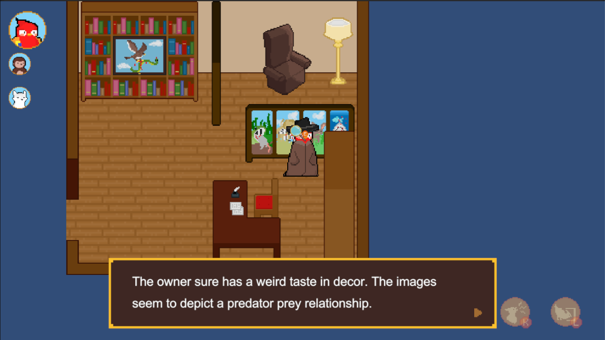
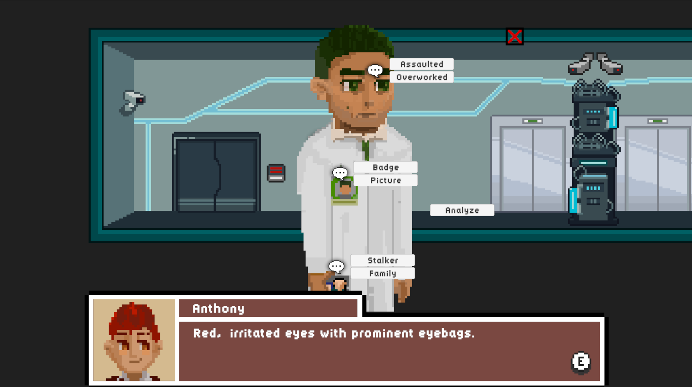
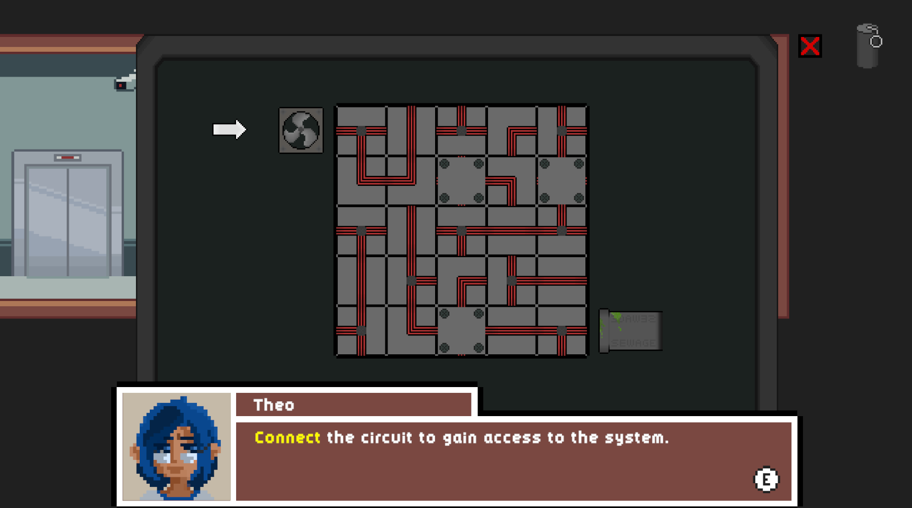
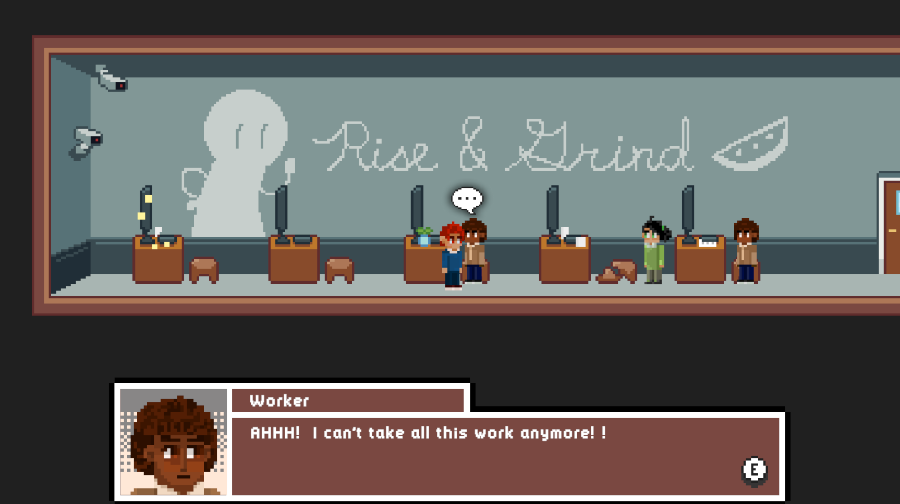
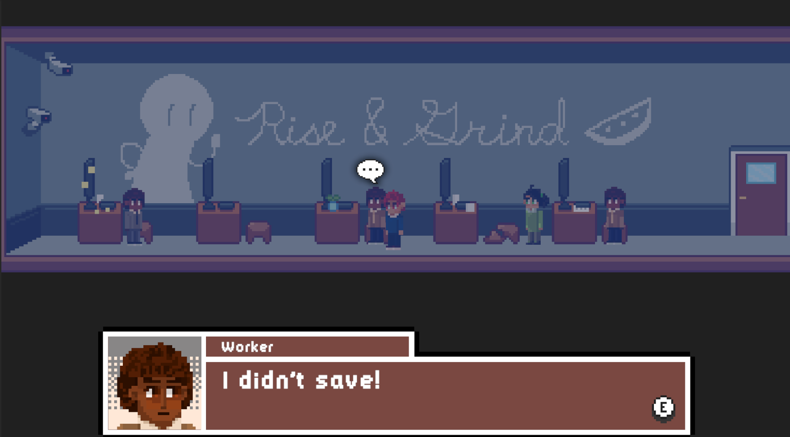

A top-down 2D puzzle adventure game with stealth elements. The player
plays as three animals (parrot, monkey, dog), stacked on top of each
other in a trench coat, who accidentally joins a spy organization.
They must solve puzzles while hiding their identities.
Jenise Cheung - Character Artist, Game Designer, Level Designer
Jillian Li - Game Developer, Game Designer, Level Designer
Tools
Aseprite
Unity
FigJam
Timeframe
14 weeks [January - April 2024]
Focus
The goal during this project was designing and creating an
experimental game focused on creating distinctive scenarios through
use of narrative and game mechanics to craft new experiences. This
was built in Unity for an Advanced Game Design course at Simon
Fraser University.
Puzzle Design
In the environmental design, I focused on ensuring that players
knew where to go, what was interactable, and what the points of
interests were. This was important as many of our puzzle clues
were either embedded into the environment or required the player
to investigate specific areas in the map. the tank is investigated
for a clue relating to the kelp in the tank.
To do this, I made points of interests “pop out” of the
environment more through the use of bright colours or through
placing interesting objects, like the desk with papers.

An example of an embedded clue, the kelp in the tank, in the environment.
The office workspace. Oppressive company communicated with the
company motto, separated desks, and security cameras.
The research lab. High-tech and oppressing atmosphere created by
using blue-grey, device props, and a high security camera
presence.
Storytelling Through Puzzles
Gameplay was designed to be related to the player character’s task
to communicate to the player what was happening in the narrative and
indicate challenges the characters were facing. It served to show
the character's different approaches to problems: Anthony's charisma
and social skills versus Theo's technological and hacking skills.

This NPC deduction puzzle conveys Anthony’s (Ch1 player)
approach to problems. The player deducts the correct dialogue
option based on the NPC’s appearance and dialogue to try to
pickpocket their keycard.

This circuit puzzle focused on conveying Theo’s (Ch2 player)
approach to problems. The player connects the two ends of the
circuit. The purpose was to create a distraction by connecting
the sewage vent to the lab room.
Dialogue and Cutscenes
I created the dialogue system to included profile pictures, variable
text size, and colour to make moments more memorable and give more
character to the NPCs. NPC dialogue changed depending on story
progression to increase immersion and reward players for
exploration. Dialogue focused on conveying the workplace atmosphere
and reactions to story beats. Since Chapter 1 and Chapter 2 takes
place simultaneosly, dialogue reflected changes from both sides of
the story.

Dialogue 1: The NPC's initial dialogue before the events of the
story during Chapter 1.

Dialogue 1: The NPC's dialogue after the power goes out due to
the actions of Chapter 2 player character.
Reflection
Through working on this project, I’ve improved my skills in Unity
development and environmental art. I’ve learned more about designing
meaningful interactions, environments, and narratives in video
games.
I’ve learned to tell the story effectively and maintain player
engagement by having gameplay intertwine with the character’s
skillsets and narrative beats. By doing so, players were able to
learn the story we wanted to tell without compromising engagement.
In the future, I would introduce our game’s hook earlier in the
game. Currently, it starts with a cutscene to walking to cutscene
which wasn’t that fun to the player. Introducing an interaction
prior to going to the rival company would help deliver background
information as well as increase player engagement.